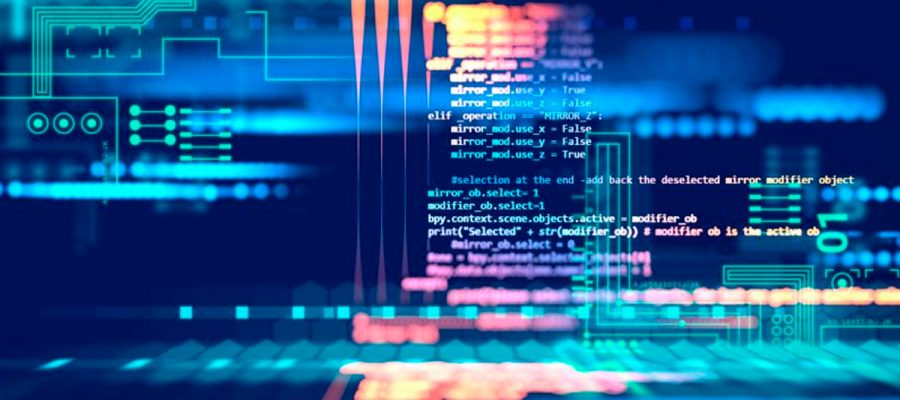

¿Qué es un programa informático?
Un programa informático es un conjunto de instrucciones organizadas y codificadas en un lenguaje de programación que una computadora puede interpretar o ejecutar para realizar una tarea específica.
En términos simples, un programa es una lista de órdenes que una máquina sigue de manera precisa para alcanzar un objetivo determinado. Estas instrucciones pueden ir desde operaciones matemáticas sencillas hasta procesos complejos como la gestión de redes, la inteligencia artificial o el procesamiento de imágenes.
La clave de un programa es su secuencia lógica: cada instrucción depende de la anterior y afecta a la siguiente. Para que un programa funcione correctamente, debe estar bien estructurado y seguir reglas específicas del lenguaje de programación en el que está escrito.
Un programa informático puede clasificarse según su finalidad en diferentes tipos, como software de sistema (sistemas operativos), software de aplicación (navegadores web, editores de texto) o software de desarrollo (compiladores, intérpretes).
